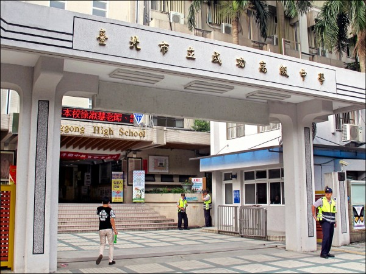

你好，我是Csillag。歡迎來到我的個人介紹網頁！ 現在我是台灣的學生。 如果您想知道台灣在哪裡，可以查看聯絡資訊獲得更多信息。 = + =
我對很多東西都感興趣！例如我在大學主修生物科學。在實驗室中，我培養細胞、腫瘤細胞和一些類器官。之前也做過一個DNA條碼的研究。做生物學實驗真的相當有趣。
此外，我對於電機設備和計算機技術也十分感興趣。我花了許多時間做一些很多奇奇怪怪的作品，例如機器人和一些小程式，現在也正在學習前端與後端的程式設計。在這個網站上，我將介紹我以前做過的一些作品。歡迎與我分享你的想法~
儘管寫程式或做電子機器設備還不是相當厲害。但這些知識使我感到好奇，我會盡我所能來學習更多。現在該結束文章了。很高興認識你！
臺北市立成功高級中學（英語：Taipei Municipal Chenggong High School），簡稱成功高中、成功中學、成功，前身是台灣日治時期根據成立時序而命名的臺北州立臺北第二中學校，為日治時期的漢人第一學府。大正11年（1922年）5月8日以地方人士之倡議，設校於萬華的艋舺祖師廟，1925年於現址創建校舍，翌年夏落成遷入啟用，並訂5月17日登陸台灣之日為校慶。1925年5月30日由萬華遷往鄰近樺山車站的現址。二戰終戰後，在1946年改名為「臺灣省立臺北成功中學」。

REF:shorturl.at/fhmzF
泰國農業大學（Kasetsart University）是泰王國久負盛名的國立綜合 類大學，也是泰國唯一的國立農業大學。泰國農業大學目前有 7 個分校， 分佈在全國各地。泰國農業大學是位於泰國曼穀的重點大學，也是泰國歷 史最悠久的學府之一。該校目前包括研究生院在內，共設有 23 各學院，其 中，占地 1,270 公頃的 Kamphaeng Saen 分校以其在地理位置及自然資源 條件而在 1978 年成爲了泰國農業大學的重要組成部分，目前是該校第二大 的校區。 農業的開發需要大量的現代人才，泰國農業大學爲泰國農業的高速持 續發展提供大量技術以及相關人才培養。泰國農業大學現爲綜合性大學著 名學科爲：基礎學科包括數學、物理、化學，以及農業、漁業及相關課程。 其熱門專業爲農林類、資訊科學、管理、生物、工程技術等。
REF:http://oga.nthu.edu.tw/overseas.outgoing/detail/sn/504
國立交通大學是校本部位於臺灣新竹市的大專院校，為中華民國高教深耕計畫遴選出參與全球鏈結全校型計畫的四所大學之一，前身為上海徐家滙南洋公學，1958年在臺復校，與新竹科學工業園區及國立清華大學相鄰。該校主要目的為培育工程（engineering）、科學（science）及管理（administration）方面的人才，此宗旨現於校徽上的ESA；學校主要發展領域為電子、資通訊及光電等，為臺灣頂尖國立大專校院之一。
曾一度與相鄰的國立清華大學商討合併事宜，但因校名問題而破局。2018年12月26日與國立陽明大學商討多時的合併定案，兩校啟動併校程序，校名暫定為「國立陽明交通大學」。2019年9月18日，國立陽明大學及國立交通大學兩校校務會議皆通過合併計畫書，2020年8月12日其合併計畫書獲教育部同意。
交大與中國大陸的上海、西安、西南（成都）、北京等五所交大並稱「五校一家」，強調「飲水思源，同行致遠」的精神。飲水思源紀念碑也成為各校精神團結的象徵。
2021年2月1日，國立交通大學與國立陽明大學合併為國立陽明交通大學。
REF:shorturl.at/vNPY7
國立陽明交通大學 (NYCU)國立陽明交通大學（簡稱陽明交大，英語：National Yang Ming Chiao TungUniversity、縮寫NYCU）是中華民國一所國立大學，於2021年2月1日由國立陽明大學及國立交通大學合併而成。校區主要位於臺北市北投區與新竹市東區，另在新竹縣竹北市、臺北市士林區與中正區、宜蘭縣宜蘭市、臺南市歸仁區與桃園市中壢區亦設有校區；目前共設有19個學院，附設機構有74個校/院級研究中心、1間附設醫院。本校為教育部高教深耕計畫遴選出參與全球鏈結全校型計畫的四所大學之一。
REF:shorturl.at/bnqE2
工業技術研究院（簡稱工研院，英文簡寫：ITRI）是國際級的應用研究機構，以科技研發，帶動產業發展，創造經濟價值，增進社會福祉為任務。自1973年成立以來，率先投入積體電路的研發，並孕育新興科技產業；累積近三萬件專利，並新創及育成包括台積電、聯電、晶元光電等上市櫃公司，帶動產業發展。總部位於新竹，並在美國、歐洲、日本皆設有辦事處。
REF:shorturl.at/esGPU
東京工業大學（日：東京工業大学／とうきょうこうぎょうだいがく，英語名稱：Tokyo Institute of Technology）為日本東京的一所國立大學，本校區位於東京都目黑區大岡山。該校於1929年創辦，大學的簡稱為「東工大」，英文簡稱為「Tokyo Tech」。是日本文部科學省「指定國立大學法人」頂尖5校之一、超級全球大學計劃的頂尖型指定校。
REF:https://zh.wikipedia.org/wiki/%E6%9D%B1%E4%BA%AC%E5%B7%A5%E6%A5%AD%E5%A4%A7%E5%AD%B8
國立臺灣大學，簡稱臺灣大學、臺大、NTU，是臺灣第一所現代綜合大學，為臺灣學生人數最多的高等教育機構。其始於1928年日治時期創立的「臺北帝國大學」，1945年中華民國接收臺灣後經改制與易名始用現名。現設有11個學院、3個專業學院，下分56個學系、111個研究所與18個學位學程；另設有超過50餘個各學術領域之國家級或校級研究中心以及進修推廣部、臺大醫院等附屬機構，是全臺唯一學生人數超過三萬的高等教育學校。其擁有臺北市境內的3大校區、以及多處散布於全臺的分支校區與校地，總面積超過340平方公里（3萬4千公頃），佔臺灣土地總面積的百分之一。
REF:https://zh.wikipedia.org/wiki/%E5%9C%8B%E7%AB%8B%E8%87%BA%E7%81%A3%E5%A4%A7%E5%AD%B8
類器官
類器官為一種小型有立體結構的細胞團，透過類器官培養方式能夠表現出更多的細胞特徵。 這些類器官大多一周繼代一次，在實驗室中我們以癌症幹細胞作為細胞來源，而這樣的類器官未來能被作為例如藥物檢測等等的應用，使用類器官我們能針對目標細胞並避免大量使用活體實驗，降低成本開銷。
禿鷹DNA條碼
DNA條碼目前正在發展目標是以DNA特定區段來辨別不同的物種，由於目前較少人投入且生物種過多，這樣的DNA的資料庫相當稀少。我們能透過這些研究來區分不同物種，甚至來區分同種不同個體，來了解這些個體彼此間的親緣遠近。
重組蛋白設計、生產與純化
我們學習並設計DNA，藉由Transformation、Transfection交由細菌細胞生產我們所設計的蛋白質。了解純化蛋白質的技術與技巧，並嘗試純化我們所設計的蛋白質，測試我們設計該蛋白質的功能。
四足機器人
這個四足機器人是使用Lego Mindstorms NXT。我們通過設計機械結構讓他能以四足行走，並以積木將其組裝起來，盡可能地讓他走得穩定一點快一點。
KNR 機器人設計
這個作品來自智慧機器人實驗課，我們能裝許多感測器在機器人上例如攝影機、超音波感測器、紅外線感測器甚至是接觸感測機。利用各種感測器的組合與機器人軟體的撰寫來達成各式各樣的任務。偵測並避開障礙物、攝影機追蹤物體等等。
藍芽車
這是一輛藍芽車它使用Arduino為主控制系統，上面裝有hc05能以藍芽進行資料傳輸，我們能夠送藍芽訊號到app進而控制它的移動。
電源供應器與發聲器
這個作品是由電源供應器與發聲器所組成，該電源供應器能提供5-12V 電壓輸出，此外我額外加入三個IC 來幫助其穩定電壓，發聲器支援3.5mm 耳機孔的輸入，它也能利用可見光進行無線傳輸，輸入一些音樂，便能在遠處播放出來。也能接上麥克風作為小型擴音器。
時鐘
這個時鐘是以微算機8052作為基礎建構而成，他有4個七段顯示器來顯示目前時間。此外它還有其他功能，例如有一顆紅藍共陰極LED顯示此時為上午或下午，並連有一塊觸控模組與搖桿能狗調整現在時間。
砸派機
這個砸派機是應用電學課的期末專題，使用四個7490進行數字的計數，加入電機驅動版以控制驅動馬達，外接出兩個搖桿作為輸入源。在這個遊戲中雙方玩家分別旋轉自己的搖桿，轉得比較慢的人...就會被砸派！！
EEG & EMG
為基礎機器人控制系統
我們原先希望能透過EEG 來控制機器人，但後來發現我們的偵測EEG 的裝置實在無法穩定的運作，因此我們決定加入EMG 進行考慮，並做出這個控制系統。最終我們的系統提供以眼部肌肉來控制機器人，也有加入一些功能例如錄影、最短路徑等等提升使用效率。
禿鷹DNA條碼
DNA條碼目前正在發展目標是以DNA特定區段來辨別不同的物種，由於目前較少人投入且生物種過多，這樣的DNA的資料庫相當稀少。我們能透過這些研究來區分不同物種，甚至來區分同種不同個體，來了解這些個體彼此間的親緣遠近。
響應式網頁設計
這是我設計的網頁，也就是你現在看到的這個。透過這個網站來練習站業前端的撰寫，在這個過程中同時學習HTML, CSS, JavaScript code 的使用，並將他們以RWD的方式撰寫。之後我也會一步步修改它，讓它越來越好。
即時自動物聯網統計系統
這個作品是一個物聯網系統，我們設計它來幫助我們即時自動的統計人數，它主要是以一個超音波感測器架設在門口，透過測距來判斷是否有人走入或走出。疫情肆虐，我們以簡單的設備、低廉的成本來建構這個系統，提供即時室內人數在網路上，利用ESP8266 來連上物聯網系統，即時的更改數字，並標示出GPS 位置提供參考。
資料庫架設練習
我們架設這個資料庫同時練習MySQL 和PHP 的使用，簡單架設出一個系統可用來進行口罩的買賣。除此之外我們也學習防止SQL injection，加密使用者密碼，提供資料庫搜尋等等功能。

塔羅牌參考APP
我花了一個晚上使用Kotlin開發這個App，它能用於為塔羅牌提供一些提示。你可以選擇你獲得的卡片，App將顯示它的含義。此外，你還可以在此App中抽一張卡片，這可能對於你的問題給你答案。
Android Apk易經占卜參考APP
我花了一個晚上使用Kotlin開發這個App，它能用於為易經占卜提供一些提示。你可以選擇你獲得的卦象，App將顯示它的含義。此外，你還可以在此App中卜卦，這可能對於你的問題給你答案。
Android Apk